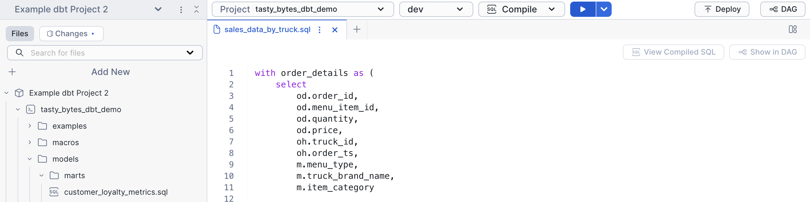

dbt Core is an open-source data transformation tool and framework that you can use to define, test, and deploy SQL transformations. dbt on Snowflake allows you to use familiar Snowflake features to create, edit, test, run, and manage your dbt Core projects. Snowflake integrates with Git repositories and offers Snowflake CLI commands to support continuous integration and development (CI/CD) workflows for data pipelines.
In this lab, we will go through everything you need to know to get started with dbt Projects on Snowflake!
Prerequisites
- Familiarity with dbt concepts
What You'll Learn
- How to use Workspaces, Snowflake's file based IDE that integrates with dbt
- How to pull a remote dbt project into Workspaces
- How dbt Projects can be run, edited, and deployed within Snowflake
- How to deploy and orchestrate dbt Projects from within Snowflake.
What You'll Need
- A Snowflake account
What You'll Build
- A dbt Project running within your Snowflake account
We will be using Tasty Bytes data in this lab. Run the script here in Snowsight to build the objects and data required for this lab.
Workspaces that you create in Snowflake are created in the personal database associated with the active user. To use Workspaces, you must run the following SQL commands to activate all secondary roles for your user.
ALTER USER my_user SET DEFAULT_SECONDARY_ROLES = ('ALL');
Sign out of Snowsight and sign back in.
We will start with your personal Workspace. Workspaces provides a developer environment where you can edit, test, and deploy your dbt projects, all within Snowflake. The personal workspace is your own area where you can create and edit files.
Navigate to Projects > Workspaces to get started.
Explore the Data
Let's explore the data we will be using in this lab.
- Create a new sql file in your Workspace and name it
data_profile.sql. - Copy and paste the code below into the new file
- Run the following queries just like you would in worksheets.
USE WAREHOUSE tasty_bytes_dbt_wh;
USE ROLE accountadmin;
-- What tables exist?
SHOW TABLES IN SCHEMA tasty_bytes_dbt_db.raw;
-- What is the scale of data?
SELECT COUNT(*) FROM tasty_bytes_dbt_db.raw.order_header;
-- Understand a query that might be used in a mart -- in this case sales grouped by customer
SELECT
cl.customer_id,
cl.city,
cl.country,
cl.first_name,
cl.last_name,
cl.phone_number,
cl.e_mail,
SUM(oh.order_total) AS total_sales,
ARRAY_AGG(DISTINCT oh.location_id) AS visited_location_ids_array
FROM tasty_bytes_dbt_db.raw.customer_loyalty cl
JOIN tasty_bytes_dbt_db.raw.order_header oh
ON cl.customer_id = oh.customer_id
GROUP BY cl.customer_id, cl.city, cl.country, cl.first_name,
cl.last_name, cl.phone_number, cl.e_mail;

Create dbt Project from GitHub
Let's now clone an example dbt project we will use in the rest of this lab.
- Click the workspace dropdown > Create Workspace From Git Repository
- In the popup, enter the following fields:
- Repository URL:
https://github.com/Snowflake-Labs/getting-started-with-dbt-on-snowflake.git - Workspace Name:
Example-dbt-Project - API Integration:
GIT_INTEGRATION. Note: the API Integration has already been configured for you. - Select Public Repository
- Repository URL:
- Click Create!


Example Project
We will work with Tasty Bytes data in this lab. The raw data includes sales data, truck metadata, and customer information. This will all be transformed with dbt and saved as a table in Snowflake.

Add a new model
We will start by adding a new model to show how you can create using workspaces. Create a SQL file called sales_data_by_truck.sql in tasty_bytes_dbt_demo/models/marts. Copy the following code.
with order_details as (
select
od.order_id,
od.menu_item_id,
od.quantity,
od.price,
oh.truck_id,
oh.order_ts,
m.menu_type,
m.truck_brand_name,
m.item_category
from {{ ref('raw_pos_order_detail') }} od
inner join {{ ref('raw_pos_order_header') }} oh on od.order_id = oh.order_id
inner join {{ ref('raw_pos_menu') }} m on od.menu_item_id = m.menu_item_id
)
select
truck_brand_name,
menu_type,
item_category,
date_trunc('month', order_ts) as sales_month,
sum(quantity) as total_items_sold,
sum(price) as total_revenue,
count(distinct order_id) as total_orders
from order_details
where truck_brand_name is not null
group by 1, 2, 3, 4
order by 1, 2, 3, 4

Configure profiles.yml
Each dbt project folder in your Snowflake workspace must contain a profiles.yml file that specifies a target warehouse, database, schema, and role in Snowflake for the project. The type must be set to snowflake.
dbt requires an account and user, but these can be left empty because the dbt project runs in Snowflake under the current account and user context.
When you run dbt commands, your workspace reads profiles.yml. When you have at least one valid target specified in profiles.yml, the selections for the targets defined in that project and the dbt commands available to run are available in the workspace menu bar.
We will keep the values in profiles.yml unchanged.

dbt deps
Let's start by running dbt deps to pull in the dbt_utils package. The dbt_utils package contains several usefull test that we have built into the project.
From the dbt toolbar, you get dropdowns for the project, target, and command. Clicking the play button will run the relevant command. You can also click the down arrow to override the arguments.
- From the toolbar, select dev and deps.
- Click the dropdown arrow and enter
dbt_access_integration. This external access integration has already been configured for you. - Click the Deps button.

dbt compile
We will now run dbt compile. From the dropdown, click compile and run it.

View Compiled SQL
Once you have compiled the project, you can view the compiled SQL by clicking the View Compiled SQL button from an individual model. This shows the true tables and views the model will reference.
View the DAG
You can also view the DAG to see how models interact with one another. Click DAG from the top toolbar to open the DAG.
dbt run
Let's now run the project to pull data through our pipeline. From the dbt toolbar, select run from the dropdown, and click the play button. Once this completes, we have data in our marts tables!
dbt test
Open tasty_bytes_dbt_demo/models/staging/__sources.yml to view data tests we have created. There are several common tests included, including ones from dbt_utils. On line 219, we have defined a maximum allowed value for order_amount. This is to flag abnormally large orders.
Let's first run dbt tests to confirm the data meets our requirements. From the toolbar, select test, and click the play button.
Oh no! There's an error with one of our tests. It looks like there is a test that doesn't quite look right. Let's update line 219 of `tasty_bytes_dbt_demo/models/staging/__sources.yml to be 10000 instead of 10. That should fix it.
- dbt_utils.accepted_range: # Realistic order amount range
min_value: 0
max_value: 10000
inclusive: true
Deploy dbt Project
Now that we have updated and validated our dbt project, let's deploy it so we can build automation. Deploying a dbt project creates a Snowflake object and allows us to create tasks based on the object.
- Click Deploy in the top right of workspaces
- Ensure your role is
accountadmin - Select database
tasty_bytes_dbt_dband schemaraw - Name it
dbt_project - Deploy!

View git
Workspaces are fully git backed. To view changes and commit, click changes from the file selector. In this case, we have pulled from a public repository, so we will skip committing.

Monitor dbt Projects
You can get an overview of dbt project status from the dbt Projects activity in Snowsight. Navigate to monitoring > dbt Projects to view overall status of dbt Projects and quickly jump to the deployed projects.

Orchestrate with Tasks
Create Scheduled dbt Tasks
Let's create tasks to regularly run and test our dbt project.
- Click dbt_project in the top right corner of Workspaces
- Click Create Schedule from the dropdown
- Enter a name, schedule, and profile, then click create

Complex Tasks and Alerts
We can create more complex task structure with the script below. It creates a task DAG and alerts us when there is a test failure. Copy the script below into a new SQL file and run the commands one by one. Note the alert will fail unless you have verified your email. To verify your email, click on the user icon in the bottom left of the screen > profile > enter your email > click the link in your email.
USE WAREHOUSE tasty_bytes_dbt_wh;
USE ROLE accountadmin;
CREATE OR REPLACE TASK tasty_bytes_dbt_db.raw.dbt_deps_task
WAREHOUSE=TASTY_BYTES_DBT_WH
SCHEDULE='60 MINUTES'
AS EXECUTE DBT PROJECT "TASTY_BYTES_DBT_DB"."RAW"."DBT_PROJECT" args='deps --target dev' external_access_integrations = (DBT_ACCESS_INTEGRATION);
CREATE OR REPLACE TASK tasty_bytes_dbt_db.raw.dbt_run_task
WAREHOUSE=TASTY_BYTES_DBT_WH
AFTER tasty_bytes_dbt_db.raw.dbt_deps_task
AS EXECUTE DBT PROJECT "TASTY_BYTES_DBT_DB"."RAW"."DBT_PROJECT" args='run --target dev';
CREATE OR REPLACE TASK tasty_bytes_dbt_db.raw.dbt_test_task
WAREHOUSE=TASTY_BYTES_DBT_WH
AFTER tasty_bytes_dbt_db.raw.dbt_run_task
AS
DECLARE
dbt_success BOOLEAN;
dbt_exception STRING;
my_exception EXCEPTION (-20002, 'My exception text');
BEGIN
EXECUTE DBT PROJECT "TASTY_BYTES_DBT_DB"."RAW"."DBT_PROJECT" args='test --target dev';
SELECT SUCCESS, EXCEPTION into :dbt_success, :dbt_exception FROM TABLE(result_scan(last_query_id()));
IF (NOT :dbt_success) THEN
raise my_exception;
END IF;
END;
-- Run the tasks once
ALTER TASK tasty_bytes_dbt_db.raw.dbt_run_task RESUME;
ALTER TASK tasty_bytes_dbt_db.raw.dbt_test_task RESUME;
EXECUTE TASK tasty_bytes_dbt_db.raw.dbt_deps_task;
-- Optionally create alerts from the task
-- NOTE: you must validate your email and replace it at the bottom of the alert
create or replace alert tasty_bytes_dbt_db.raw.dbt_alert
--- no warehouse selected to run serverless
schedule='60 MINUTES'
if (exists (
SELECT
NAME,
SCHEMA_NAME
FROM
TABLE(INFORMATION_SCHEMA.TASK_HISTORY(
SCHEDULED_TIME_RANGE_START => (greatest(timeadd('DAY', -7, current_timestamp), SNOWFLAKE.ALERT.LAST_SUCCESSFUL_SCHEDULED_TIME())),
SCHEDULED_TIME_RANGE_END => SNOWFLAKE.ALERT.SCHEDULED_TIME(),
ERROR_ONLY => True))
WHERE database_name = 'TASTY_BYTES_DBT_DB'
)
)
THEN
BEGIN
LET TASK_NAMES string := (
SELECT
LISTAGG(DISTINCT(SCHEMA_NAME||'.'||NAME),', ') as FAILED_TASKS
FROM
TABLE(RESULT_SCAN(SNOWFLAKE.ALERT.GET_CONDITION_QUERY_UUID()))); -- results of the condition query above
CALL SYSTEM$SEND_SNOWFLAKE_NOTIFICATION(
SNOWFLAKE.NOTIFICATION.TEXT_HTML(
'Tasks '||:TASK_NAMES ||' failed since '||(greatest(timeadd('DAY', -7, current_timestamp), SNOWFLAKE.ALERT.LAST_SUCCESSFUL_SCHEDULED_TIME())
)
),
SNOWFLAKE.NOTIFICATION.EMAIL_INTEGRATION_CONFIG(
'DEMO_EMAIL_NOTIFICATIONS_DBT', -- email integration
'Snowflake DEMO Pipeline Alert', -- email header
array_construct('<YOUR EMAIL HERE>') -- validated user email addresses
)
);
END;
;
-- Execute once
EXECUTE ALERT tasty_bytes_dbt_db.raw.dbt_alert;
You can view the status or running tasks by going to Monitoring > Task History.

Tracing
dbt projects in Snowflake integrate with Tracing and Logging, allowing you to easily monitor and debug dbt projects. Tracing follows the OpenTelemetry standard and allows you to keep logs within a single platform.
To view tracing, go to Monitoring > Traces & Logs. Click on the most recent one which should be our failed dbt test.

Cost Monitoring
Snowflake makes it easy to monitor usage across your account. To view consumption, go to Admin > Cost Management > Consumption Tab. Depending on your setup, you can create a dedicated warehouse to run dbt jobs to allow easy monitoring.
Additionally, you are able to build resource monitors and alerts based on warehouse consumption.

Congratulations! You've successfully completed the "Getting Started with dbt Projects on Snowflake" lab. You now understand how dbt Core on Snowflake enables you to define, test, and deploy SQL transformations using familiar Snowflake features. You've learned how Snowflake's native integration with Git repositories and CLI commands support CI/CD workflows for your data pipelines.
If you want to learn more about dbt Projects on Snowflake, check out the official documentation.
What You Learned
- How to use Workspaces, Snowflake's file-based IDE that integrates with dbt
- How to pull a remote dbt project into Workspaces
- How dbt Projects can be run, edited, and deployed within Snowflake
- How to deploy and orchestrate dbt Projects from within Snowflake